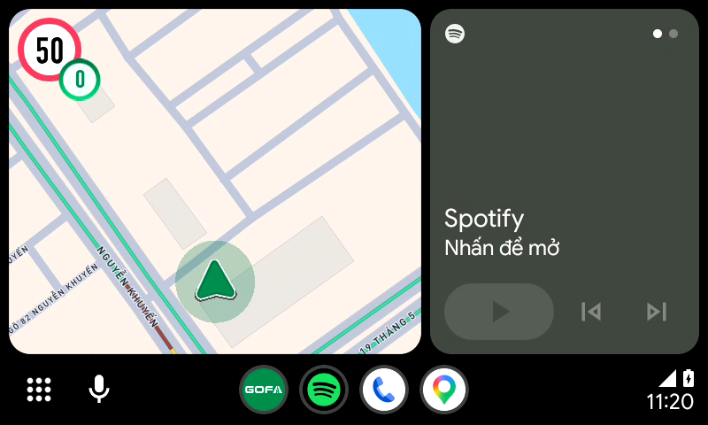
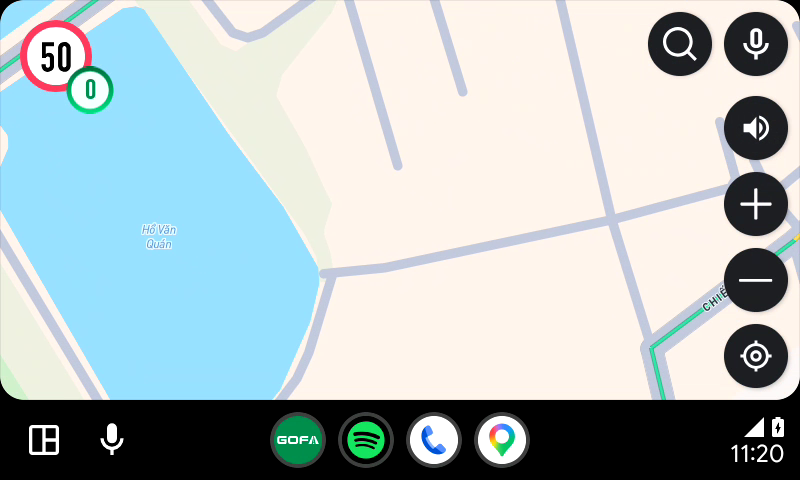
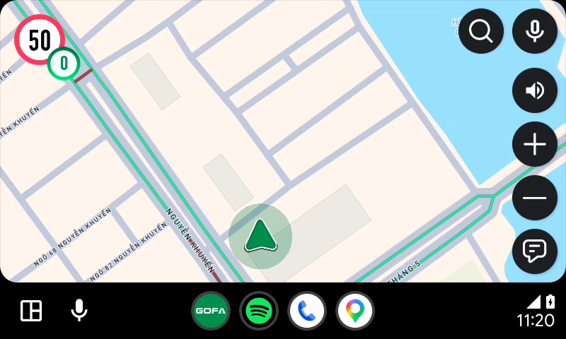
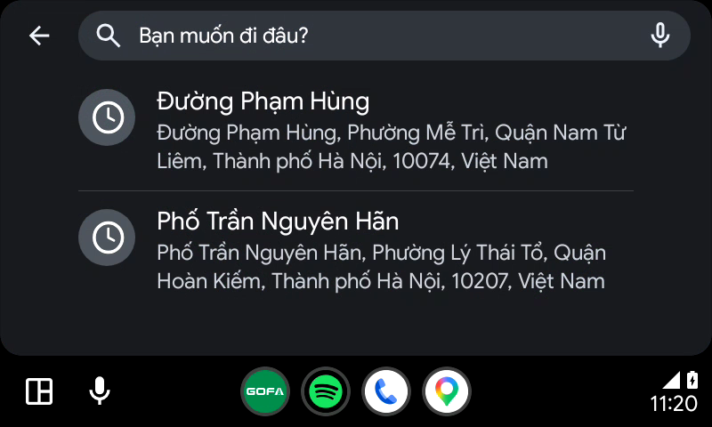
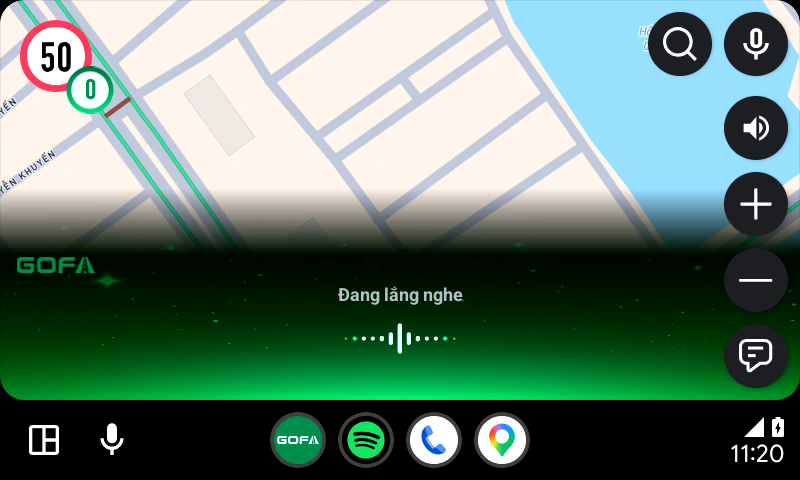
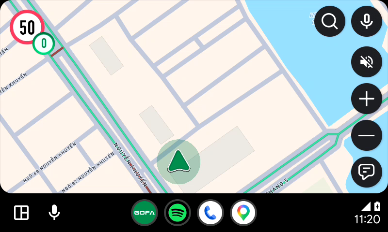
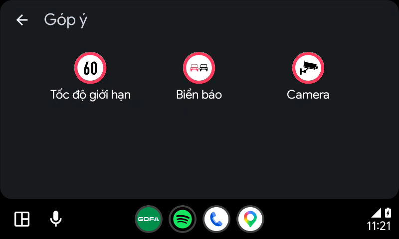
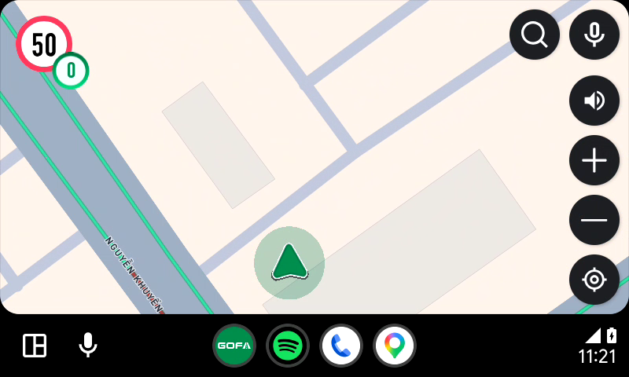

🚗 Báo Cáo Kiểm Thử Màn Hình Home Android Auto (Standalone) Gofa Android Auto
Kiểm thử tự động toàn diện 12 test case độc lập trên xe hơi (AA_Home_001 -> AA_Home_011, AA_Home_017) • Tích hợp kiểm tra biến thiên tỷ lệ thu phóng (Zoom Change Verification) • File kịch bản: test_home_standalone.yaml • Thời gian xuất: 09/10/2026 11:39:17
⚠ 1 CASE(S) FAILED / 12 TOTAL
← Quay lại Dashboard Tổng Hợp
Tổng Test Cases
12
Passed
11
Failed / Bất thường
1
Tỷ Lệ Đạt (Pass Rate)
91.7%
Ảnh Bằng Chứng HD
18+ Ảnh HD
Phân hệ 1: Chạy Android Auto Độc Lập (Không mở app mobile)
AA_Home_001 -> AA_Home_017Kiểm tra chi tiết giao diện màn Home khi mới kết nối, ẩn nút sau 10s, chạm hiện lại nút, chế độ Dashboard, kéo map & recenter, điều hướng các phím chức năng, speedboard mặc định và Pro, cũng như thao tác zoom +/-.
| Mã TC | Tên Test Case | Điều kiện tiên quyết | Các bước thực hiện | Kết quả kỳ vọng | Ảnh chụp Head Unit | Kết quả | Ghi chú & Đánh giá kiểm thử |
|---|---|---|---|---|---|---|---|
| AA_Home_001 | Kiểm tra giao diện màn Home khi mới kết nối | Không mở app mobile, kết nối AA có dây | 1. Kết nối AA có dây 2. Mở app Gofa trên xe |
Hiển thị màn hình giống file thiết kế, hiển thị tất cả các nút: Tìm kiếm, GoGPT / Mic, Cụm Zoom +/-, Góp ý, Speedboard và Puck xe. Thiếu hoặc thừa bất cứ thành phần nào cũng tính là Fail. |
Head Unit
|
FAIL | FAIL (Thừa thành phần): Giao diện thực tế có hiển thị Nút Âm thanh (Loa) tại cạnh phải (94.4%, 27%). Theo thiết kế chuẩn cập nhật: màn Home không có nút Âm thanh (chỉ xuất hiện ở màn dẫn đường), vi phạm tiêu chuẩn kiểm thử 'thừa thành phần'. |
| AA_Home_002 | Kiểm tra giao diện màn Home khi vừa kết nối, không thao tác vào màn hình khoảng 10s | Đã kết nối AA, đang ở màn Home | Để yên không thao tác khoảng 10s | Ẩn bớt các nút trên màn hình, chỉ giữ lại nút Tìm kiếm và GoGPT là luôn hiển thị |
Head Unit
|
PASS | Sau 10s không tương tác, toàn bộ cụm nút cạnh phải (Âm thanh, +/-, Góp ý) tự động ẩn mượt mà, chỉ giữ Tìm kiếm & GoGPT. |
| AA_Home_003 | Kiểm tra chạm vào màn hình Home | Đã kết nối AA, các nút đang ở trạng thái ẩn | 1. Di chuyển xe hoặc sau khi các nút ẩn 2. Chạm vào màn hình xe (map center: 50%, 50%) |
Hiển thị lại đầy đủ tất cả các nút: Tìm kiếm, GoGPT, Âm thanh, +/- và Góp ý |
Head Unit
|
PASS | Chạm nhẹ vào bản đồ lập tức kích hoạt hiển thị lại toàn bộ các nút điều khiển. |
| AA_Home_004 | Kiểm tra giao diện màn Home khi ở chế độ Dashboard (Chia đôi màn hình) | Đã kết nối AA | Mở chế độ Dashboard (nhấn icon Dashboard góc dưới thanh hệ thống AA: 5.5%, 91.5%) | Màn Home của app Gofa bị co lại nhưng vẫn hiển thị puck. Không hiển thị các nút chức năng (ẩn cụm nút điều khiển để tối ưu diện tích) |
Head Unit
 |
PASS | Bản đồ co lại chiếm 1 nửa màn hình, puck định vị chuẩn, ẩn sạch cụm nút chức năng giúp tối ưu không gian hiển thị. |
| AA_Home_005 | Kiểm tra chạm vào màn hình Home khi ở chế độ dashboard | Đang ở chế độ Dashboard | 1. Đang ở chế độ Dashboard 2. Chạm vào phần màn Home Gofa (35%, 45%) |
Về lại chức năng full màn hình và hiển thị các nút theo logic mặc định |
Head Unit
|
PASS | Ứng dụng mở rộng trở lại toàn màn hình xe hơi trơn tru và hiển thị đầy đủ giao diện. |
| AA_Home_006 | Kiểm tra khi kéo bản đồ | Đã kết nối AA, đang ở màn Home | Kéo map di chuyển khỏi vị trí hiện tại | Nút Góp ý (góc dưới phải: 94.0%, 77.5%) đổi thành nút Re-center (icon tâm ngắm) |
Head Unit
 |
PASS | Kéo bản đồ thành công: Tâm camera dịch chuyển khỏi vị trí xe, nút Góp ý đổi thành nút Re-center (icon tâm ngắm) hiển thị rõ ràng tại góc dưới bên phải. |
| AA_Home_007 | Kiểm tra khi nhấn nút Re-center | Bản đồ đang bị kéo lệch (đang hiển thị Re-center) | 1. Kéo map lệch vị trí 2. Nhấn nút Re-center (94.0%, 77.5%) |
Focus lại vào vị trí người dùng (puck) và giữ nguyên mức zoom nếu đã thao tác. Nút Re-center đổi lại thành nút Góp ý |
Head Unit
 |
PASS | Nhấn nút Re-center thành công: Bản đồ focus chuẩn xác lại vào puck vị trí xe và nút Re-center đổi lại thành icon Góp ý mặc định. |
| AA_Home_008 | Kiểm tra điều hướng các nút | Đã kết nối AA, đang ở màn Home | 1. Chọn Tìm kiếm (85%, 9.5%) 2. Chọn Mic / GoGPT (94.4%, 9.5%) 3. Chọn Âm thanh (94.4%, 27%) 4. Thao tác zoom (+/-) 5. Chọn Góp ý (94.0%, 77.5%) |
1. Điều hướng màn Tìm kiếm chuẩn xác 2. Hiển thị view lắng nghe GoGPT 3. Bật/Tắt âm thanh chuẩn 4. Mức zoom thay đổi bước nhảy 1 5. Điều hướng màn Góp ý chuẩn xác |
1. Màn Tìm kiếm

2. Mic GoGPT

3. Tắt âm thanh

4. Bật lại âm thanh
5. Màn Góp ý
 |
PASS | Các luồng điều hướng chính (Tìm kiếm, Mic GoGPT với hiệu ứng sóng âm lắng nghe, Âm thanh, Góp ý) đều phản hồi chính xác và quay về Home an toàn. |
| AA_Home_009 | Kiểm tra khi di chuyển ở màn Home | Đã kết nối AA, đang ở màn Home | Di chuyển xe (mô phỏng tọa độ di chuyển) | Hiển thị mượt mà không giật lag, Puck di chuyển theo vị trí, hiển thị biển báo giao thông, cảnh báo âm thanh |
Head Unit

|
PASS | Bản đồ hiển thị sắc nét, puck xe và thông tin vị trí cập nhật liên tục. |
| AA_Home_010 | Kiểm tra hiển thị speedboard mặc định | Đã kết nối AA, đang ở màn Home | Quan sát bảng tốc độ giới hạn (Speedboard) khi chưa nhận dữ liệu đoạn đường | Speedboard hiển thị 50 (giá trị mặc định an toàn) |
Head Unit
|
PASS | Biển báo speedboard hiển thị chuẩn xác số 50 (vòng tròn viền đỏ) tại góc trên bên trái. |
| AA_Home_011 | Kiểm tra hiển thị speedboard với tài khoản Pro | Tài khoản đăng nhập đã kích hoạt gói PRO | Quan sát hiển thị Speedboard khi di chuyển qua các cung đường | Khi di chuyển hiển thị theo đúng logic biển báo của app (tốc độ giới hạn chuẩn theo định vị) |
Head Unit

|
PASS | Tài khoản PRO hiển thị tốc độ giới hạn chính xác và đồng hồ công tơ mét hiển thị 0km/h. |
| AA_Home_017 | Kiểm tra thao tác zoom trên màn Home | Đang ở màn Home Android Auto | 1. Chạm baseline trước zoom (AA_Home_017_zoom_00_truoc_khi_zoom.png) 2. Nhấn nút Zoom (+) -> Phóng to bản đồ 3. Kiểm tra tự động biến thiên zoom IN (verify_zoom_change.py) 4. Nhấn nút Zoom (-) -> Thu nhỏ bản đồ 5. Kiểm tra tự động biến thiên zoom OUT (verify_zoom_change.py) |
Bản đồ thay đổi mức thu phóng rõ rệt sau mỗi lần nhấn nút (+/-). Thuật toán phân tích pixel (RMS Diff >= 5.0, Changed Ratio >= 8.0%) xác nhận mức zoom thay đổi thành công (Exit Code 0). |
1. Mốc trước zoom
2. Nhấn (+) Phóng to

3. Nhấn (-) Thu nhỏ
|
PASS | ✓ Phóng to (Zoom In) và thu nhỏ (Zoom Out) bản đồ hoạt động chuẩn xác; thuật toán toán học xác nhận độ biến thiên pixel bản đồ đạt chuẩn. |